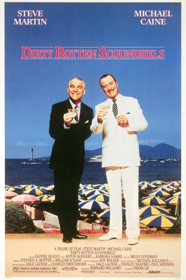

#8823 Zwei hinreißend verdorbene Schurken
Alternativ: Dirty Rotten Scoundrels
 
 IMDB-Wertung: 7.3 / 10
IMDB-Wertung: 7.3 / 10  Metascore: 0
Metascore: 0 
Wealthy native Brit Lawrence Jamieson, living in Beaumont-sur-Mer on the French Riviera, earns most of his money through big cons on wealthy unsuspecting women. With the help of his associates -- corrupt police Inspector Andre, who provides him most of his intel, and his butler Arthur -- he pulls scams such as pretending to be a foreign deposed prince who needs money to finance a secret war to liberate his people. Beaumont-sur-Mer, and thus his world, is invaded by brash American Freddy Benson, another con man whose targets are also wealthy unsuspecting women. Lawrence believes Freddy is the Jackal, a con man whose true identity is unknown but who is known to be working his way through Europe. While Lawrence works on thousands of dollars per scam, Freddy works only on tens or if he is lucky hundreds of dollars. Lawrence's efforts to get Freddy out of his territory are unsuccessful, so when Freddy figures out that Lawrence is a con man like he is, he decides to blackmail Lawrence to ...
Jahr: 1988
Dauer: 110 Minuten
FSK: 12
Land: USA Studio: Orion PicturesTonspuren: DD2.0 - ,
Untertitel:
Auflösung: 1080p (1920x1040) Größe: 10444 MB
Genre: Komödie, Krimi
Regisseur:  Frank Oz
Frank Oz
Drehbuch: Dale Launer
Soundtrack: Miles Goodman
Darsteller:
 Steve Martin als Freddy Benson
Steve Martin als Freddy Benson Michael Caine als Lawrence Jamieson
Michael Caine als Lawrence Jamieson Glenne Headly als Janet Colgate
Glenne Headly als Janet Colgate Anton Rodgers als Inspector Andre
Anton Rodgers als Inspector Andre- Barbara Harris als Fanny Eubanks
 Ian McDiarmid als Arthur
Ian McDiarmid als Arthur Dana Ivey als Mrs. Reed
Dana Ivey als Mrs. Reed- Meagen Fay als Lady from Oklahoma
 Frances Conroy als Lady from Palm Beach
Frances Conroy als Lady from Palm Beach André Penvern als Waiter on the Train
André Penvern als Waiter on the Train- Louis Zorich als Greek Millionaire
- Nicole Calfan als Lady in Dining Car
- Aïna Walle als Miss Krista Knudsen
- Cheryl Pay als Lady with Pearls
- Nathalie Auffret als Marion
- Lolly Susi als Lady in Rolls Royce
 Rupert Holliday-Evans als English Sailor #1
Rupert Holliday-Evans als English Sailor #1- Hepburn Graham als English Sailor #2
- Xavier Maly als Hotel Bellboy
- Georges Gerrard Baffos als Assistant Hotel Manager
- Valerie Beaufils als Pretty Beach Girl
- Bernard Williams als Photographer on beach (uncredited)
Datei: X:\1988\Zwei hinreißend verdorbene Schurken (1988, FSK12, 1920x1040).mkv seit 30.04.2018
Festplatte: HD 1987-1991
 Es gibt insgesamt 66 Filme in der Gruppe '1988'
Es gibt insgesamt 66 Filme in der Gruppe '1988'